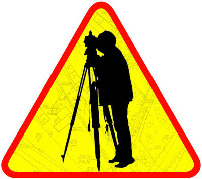

GeoNerd.pl
O mnie
Przydatne linki
Galeria
Przydatne i mniej przydatne linki
Garść linków dla użtkowników, którzy niewiedzą co to Google.
Przydatne linki:
Uniwersytet Przyrodniczy we Wrocławiu
Wydział Inżynierii Kształtowania Środowiska i Geodezji
Instytut Geodezji i Geoinformatyki
e-sprawozdania
Wójek Google
Ciocia Wikipedia
Codeacademy.com - Strona z kursami programowania
Mój profil Facebooku
Geoportale:
Geoportal naszego pięknego kraju
Geoportal Dolnego Śląska
Nawet taka dziura ma swój geoportal: geoportal Wołów
Geoportal ułatwiający przetrwanie apokalipsy Zombie
Randomowe linki:
Wpis na nonsensopedii o zawodzie Geodety
Poradnik: Jak zostać Geodetą
Strona została wykonana przez Krystiana Wielichowskiego